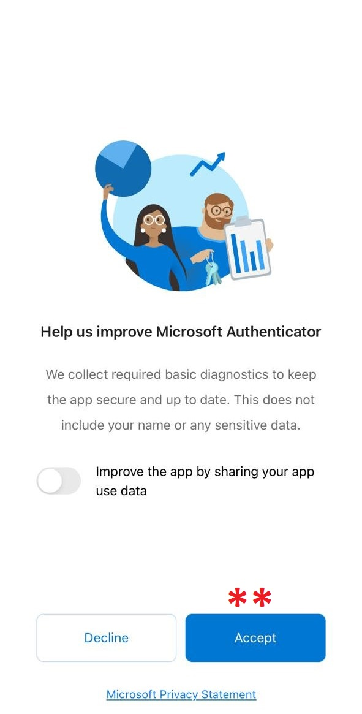
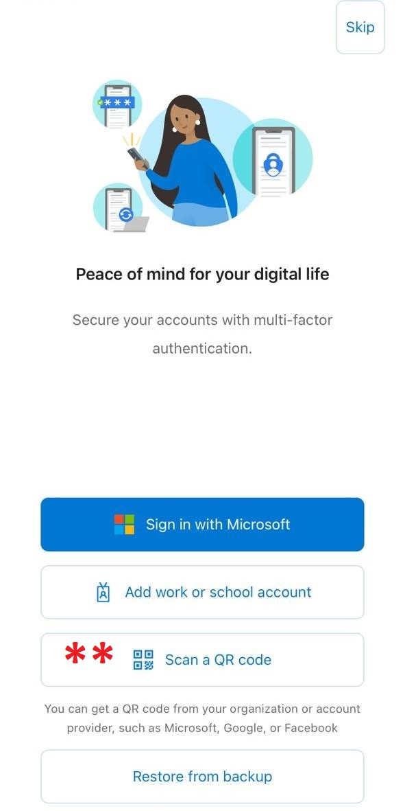
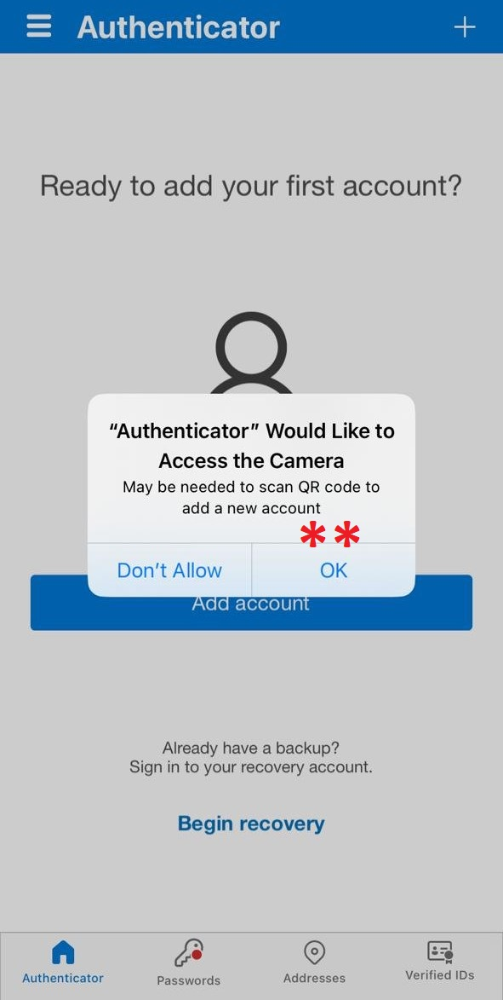
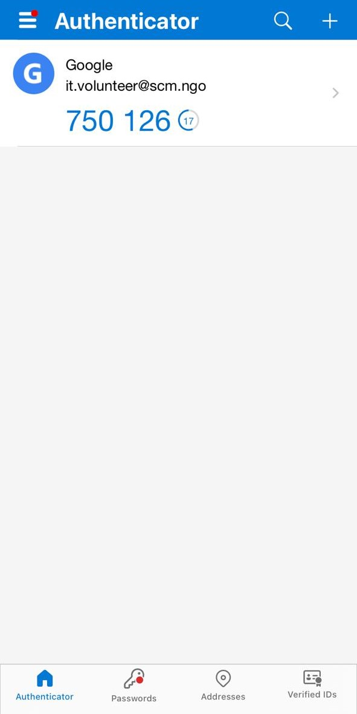

Microsoft Authenticator || مايكروسوفت أوثنتيكيتور
الاسم: مايكروسوفت أوثنتيكيتور
المهمة: إضافة طبقة حماية أخرى غير اسم المستخدم وكلمة المرور وتسمى التحقق
بخطوتين
أنظمة التشغيل التي يعمل عليها: أندرويد، آيفون "IOS"
الثمن: مجاني

كيف يعمل؟
يقوم برنامج مايكروسوفت أوثنتيكيتور بتقديم خدمة التحقق بخطوتين (2FA) بحيث يكون إدخال اسم المستخدم وكلمة المرور باعتبارها الخطوة الأولى و رمز التحقق المرسل الى التطبيق على هاتفك الذكي "على تطبيق مايكروسوفت أوثنتيكيتور" هي الخطوة الثانية
يمتاز برنامج مايكروسوفت أوثنتيكيتور بالتالي:
يمكن من خلال البرنامج وضع خطوة تحقق أخرى لمعظم البرامج الموجودة عبر الانترنت مثل : (حسابات التواصل الاجتماعي، حساب البريد الالكتروني، برامج حفظ البيانات وأي تطبيق أو منصة تدعم هذه الميزة)
يحتوي هذا الدليل على شرح لطريقة استخدام التطبيق وربطه بحساب جوجل:
1- ضبط حساب جوجل
- بعد تحميل التطبيق نقوم بفتحه
- ظهر الصفحة التالية، نقوم بالضغط على "Accept"
 -
-
تظهر الصفحة التالية وهي الصفحة الرئيسية لتطبيق مايكروسوفت أوثنتيكيتور
- نقوم بالضغط على "Scan a QR code"
 - تظهر الصفحة التالية
- نقوم بإعطاء إمكانية الوصول للتطبيق ليستطيع استخدام الكاميرا، نضغط على OK
- في حالة كنا نستخدم موبايل بنظام أندرويد تظهر لنا نافذة مختلفة، نضغط على "Allow while using the app" أو "السماح عند استخدام التطبيق"
 - عند السماح للتطبيق باستخدام الكاميرا، تفتح الكاميرا لقراءة أو مسح رمز QR
-
للحصول على الرمز "QR" الخاص بحساب جوجل:
- نذهب إلى المتصفح، نضغط على الصورة أعلى يمين أو يسار المتصفح
- نضغط على إدارة حسابك أو "Manage your google account"

- تظهر الصفحة التالية:
- في القائمة الجانبية، نضغط على الأمان أو "Security"
- نبحث عن "التحقق بخطوتين" أو "Two-step authentication" ونضغط عليها
- تظهر الصفحة التالية:
- نضغط على "البدء" أو "Get started"

- تظهر الصفحة التالية:
- نقوم بإدخال كلمة السر الخاصة بحسابنا على جوجل ثم نضغط على "التالي" أو "Next"

- تظهر الصفحة التالية:
- نقوم باختيار الدولة وإدخال رقم الهاتف المحمول الذي نريد ربطه بالحساب
- نختار إرسال رسالة نصية لإرسال كود أو رمز لتأكيد أن الرقم الذي سبق إدخاله متاح
- نضغط "إرسال" أو "Send"

- تظهر الصفحة التالية:
- نقوم بإدخال الرمز الذي تم إرساله إلى الرقم في الخطوة السابقة، ثم نضغط على "التالي" أو "Next"
- تظهر الصفحة التالية:
- نضغط على "تشغيل" لتفعيل ميزة التحقق بخطوتين عن طريق رقم الهاتف

- تظهر الصفحة التالية وتعني أنه تم التفعيل:

- في نفس الصفحة السابقة ننزل لأسفل قليلا لنجد "تطبيق Authenticator" نضغط على السهم بجانبها

- تظهر الصفحة التالية:
- نضغط على "إعداد تطبيق المصادقة"

- تظهر النافذة التالية:
- نقوم بتصوير الكود الظاهر في الصفحة عن طريق تطبيق مايكروسوفت أوثنتيكيتور
- بعد أن يتم تصوير الكود تظهر الصفحة التالية
- وتحتوي على كود، مما يعني أنه تم إضافة الحساب الخاص بنا على تطبيق مايكروسوفت أوثنتيكيتور
- نقوم بنسخ الكود الظاهر في الشاشة للصقه في الخطوة التالية
 - نعود إلى المتصفح
- نقوم بلصق الكود في الحقل المخصص له ثم نضغط على "إثبات الصحة"

- الآن تم إضافة خطوة تسجيل ثانية لحساب الـ Gmail، لذلك عند التسجيل من جديد سوف يطلب منك كلمة السر والرمز الموجود في تطبيق أوثي، أي خطوتين للتسجيل وهو معنى "التحقق بخطوتين"